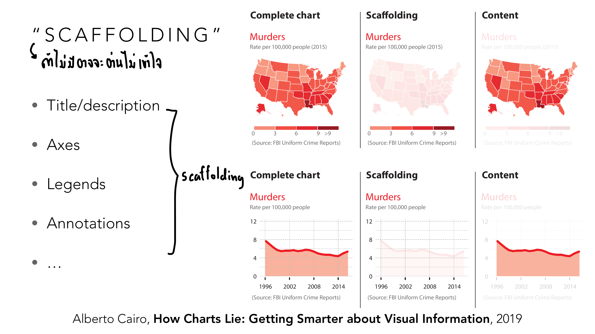
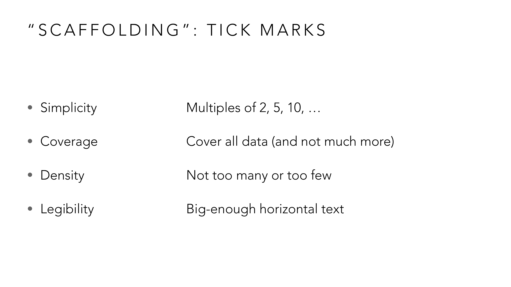
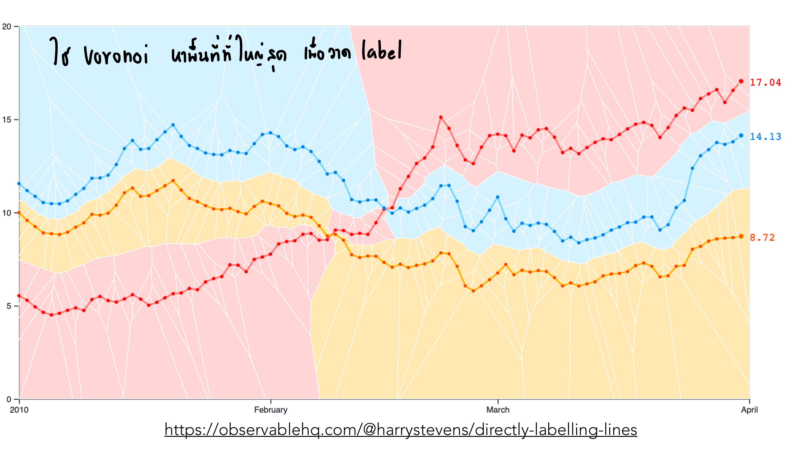
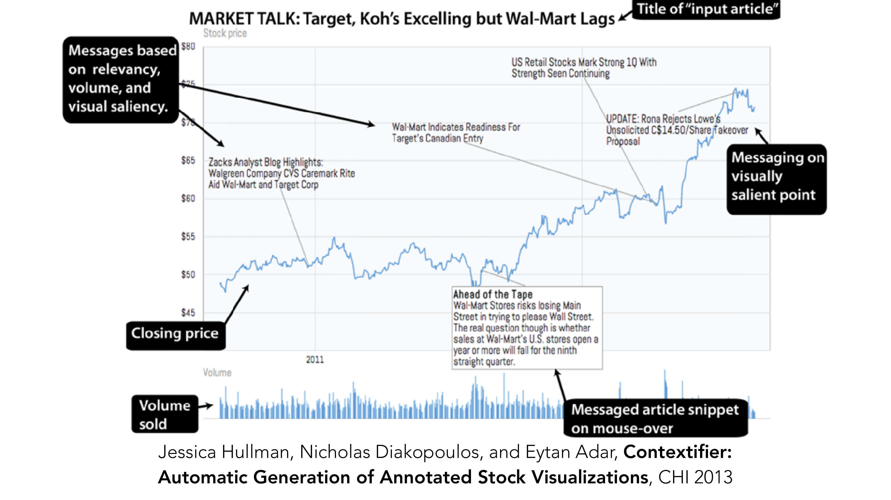
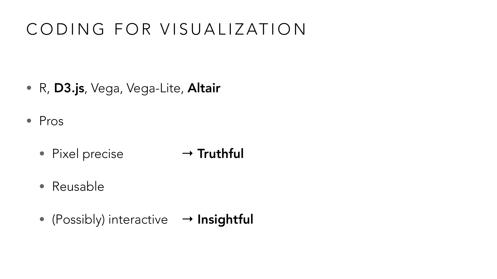
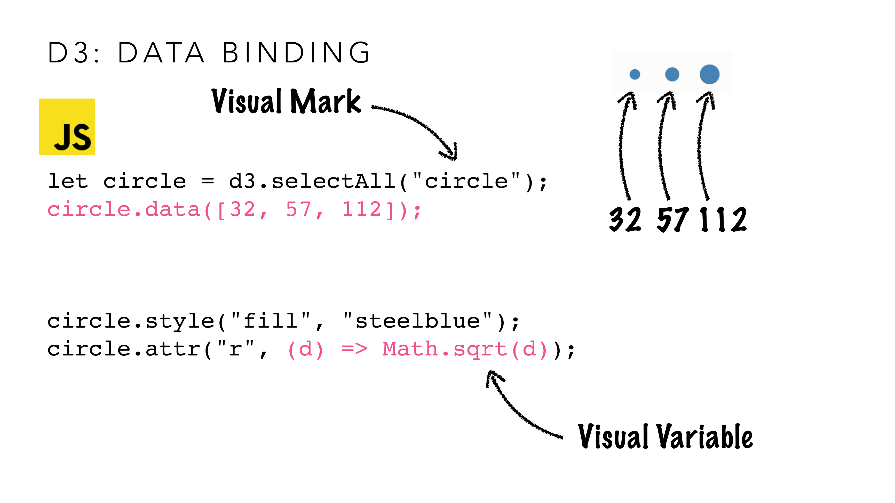
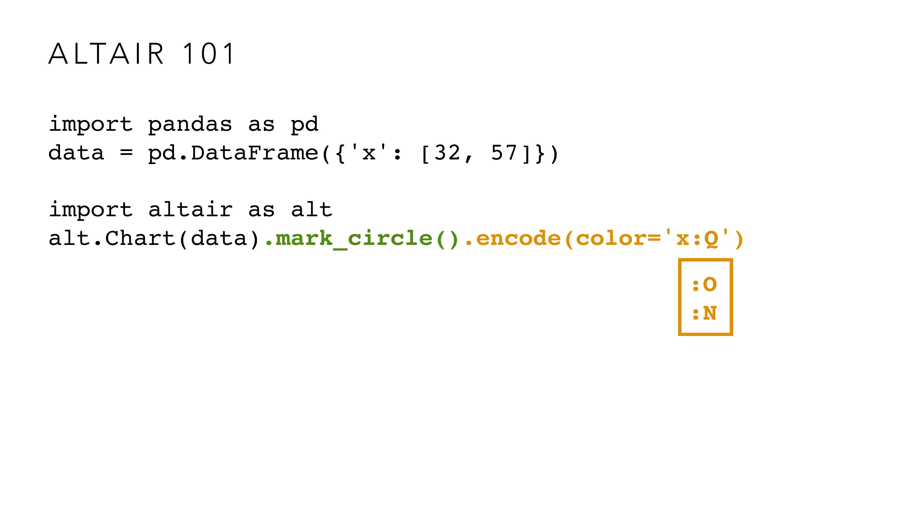
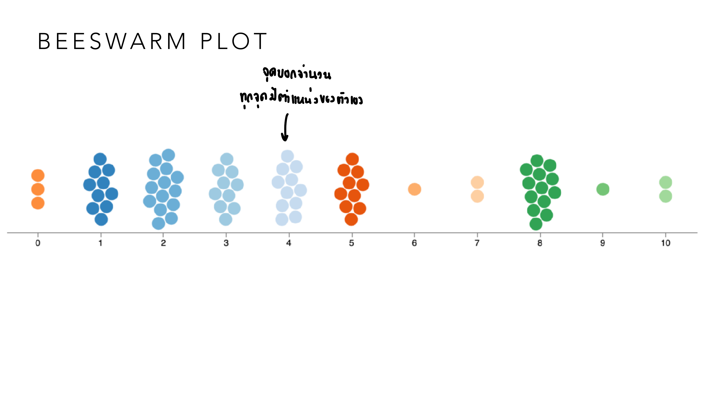

vis-4-univariate-code.pdf
Deck นี้มีสองส่วน: หลักการออกแบบ visualization สำหรับข้อมูลตัวแปรเดียว (univariate) และการเริ่มเขียนโค้ด (D3.js/Altair) เพื่อสร้างมันขึ้นจริง เนื้อหาโค้ดเน้นสำหรับ mini project ของวิชานี้ — บทเรียนนี้จะเน้นหลักการที่ใช้วิเคราะห์/ออกแบบข้อสอบเป็นหลัก และแตะโค้ดเท่าที่ช่วยตอกย้ำหลักการเดิม.
Univariate = ข้อมูล 1 ตัวแปรต่อ 1 sample เป้าหมายเวลาแสดงผลมักเป็นหนึ่งใน 3 อย่างนี้:
กระบวนการออกแบบ: Determine the data type → Pick one appropriate visual variable → เติม scaffolding.
Cairo แยกชาร์ตออกเป็นสองชั้น: Content (รูปทรง/เส้นที่เข้ารหัสข้อมูลจริง) กับ Scaffolding (ทุกอย่างที่ทำให้ตีความ content ได้) — title/description, axes, legends, annotations. Slide สาธิตด้วยชาร์ตเดียวกัน 3 เวอร์ชัน: complete / scaffolding เท่านั้น (ไม่มีข้อมูล) / content เท่านั้น (ไม่มี scaffolding เลย ตีความไม่ได้).

ลองทำการทดลองทางความคิดตามสไลด์นี้: ถ้าเห็นแค่คอลัมน์ "Content" ของ line chart อัตราฆาตกรรมสหรัฐฯ (เส้นสีแดงลากขึ้นลงบนพื้นเปล่า ไม่มีตัวเลขกำกับแกนเลย) คุณจะบอกได้แค่ว่า "มีค่าขึ้นตอนต้น แล้วค่อย ๆ ลงและทรงตัว" แต่บอกไม่ได้เลยว่านี่คือข้อมูลอะไร ช่วงปีไหน หน่วยอะไร — พอเติม scaffolding กลับเข้าไป (title "Murders", แกน "Rate per 100,000 people", ปี 1996-2014) ถึงจะรู้ว่านี่คืออัตราฆาตกรรมที่ลดลงต่อเนื่องเกือบ 20 ปี บทเรียนคือ: เส้น/รูปทรง (content) เป็นแค่ "รูปร่างเปล่า" ที่ไม่มีความหมายอะไรเลยจนกว่าจะมี scaffolding มาบอกบริบท — เวลาวิจารณ์ visualization ในข้อสอบ ถ้าขาด title หรือหน่วยกำกับแกน ให้ฟันธงได้เลยว่าไม่ Functional ต่อให้ data ที่เข้ารหัสไว้ถูกต้อง 100%.
| หลักการ | ความหมาย |
|---|---|
| Simplicity | ใช้ตัวคูณของ 2, 5, 10 |
| Coverage | ครอบคลุมข้อมูลทั้งหมด แต่ไม่เกินความจำเป็น |
| Density | ไม่ถี่หรือห่างเกินไป |
| Legibility | ตัวอักษรแนวนอนใหญ่พออ่านได้ |

ลองใช้ 4 ข้อนี้ตรวจแกนที่มักเจอในโจทย์จริง: แกน y ที่มี tick ที่ 0, 17, 34, 51 (ห่างทีละ 17) ผิด Simplicity ทันทีเพราะ 17 ไม่ใช่เลขกลมที่คนคำนวณในหัวได้ง่าย ควรปรับเป็น 0, 20, 40, 60 แทน — แกน x ที่มีข้อมูลจริงอยู่แค่ปี 2015-2020 แต่ลาก tick ยาวไปถึงปี 2050 ผิด Coverage เพราะครอบคลุมเกินความจำเป็นจนพื้นที่ว่างเปล่าส่วนใหญ่ไม่มีข้อมูล — แกนที่มี tick ทุก ๆ 1 หน่วยจนตัวเลขทับกันอ่านไม่ออกผิดทั้ง Density (ถี่เกินไป) และ Legibility (อ่านไม่ออก) พร้อมกัน — 4 ข้อนี้จึงไม่ใช่ทฤษฎีลอย ๆ แต่เป็น checklist ที่ใช้เช็คทีละแกนได้จริงเวลาวิเคราะห์ชาร์ตในข้อสอบ.
Scaffolding ที่สำคัญอีกชนิดคือ label — ป้ายชื่อกำกับเส้น/จุดข้อมูล อาจารย์ยกเทคนิคที่ใช้ Voronoi diagram มาช่วยวางตำแหน่งป้ายให้อ่านง่ายที่สุด:

แทนที่จะใช้ legend แยกกล่องไว้มุมภาพ (ต้องกวาดตาไปมาระหว่างเส้นกับกล่อง legend) เทคนิคนี้ใส่ตัวเลขกำกับ (17.04, 14.13, 8.72) ไว้ตรงปลายเส้นแต่ละเส้นโดยตรง — ปัญหาคือถ้าเส้นสองเส้นวิ่งเบียดกันในบางช่วง จะใส่ป้ายตรงไหนถึงไม่ทับเส้นอื่น? คำตอบของเทคนิคนี้คือใช้ Voronoi diagram แบ่งพื้นที่ทั้งภาพออกเป็นโซนสีตามว่า "จุดไหนใกล้เส้นสีอะไรที่สุด ณ เวลานั้น" (พื้นที่สีฟ้า = ใกล้เส้นน้ำเงินที่สุด, พื้นที่สีชมพู = ใกล้เส้นแดงที่สุด) แล้ววางป้ายตรงจุดที่โซนสีของเส้นนั้นกว้างที่สุด — โน้ตกำกับสรุปตรง ๆ ว่า "ใช้ Voronoi หาพื้นที่ที่ใหญ่สุดเพื่อวาด label" นี่คือตัวอย่างที่ scaffolding (การวางป้ายกำกับ) ก็มีอัลกอริทึมเบื้องหลังให้ออกแบบอย่างมีหลักการได้ ไม่ใช่แค่วางตามความเคยชิน.
อีกตัวอย่างหนึ่งแสดง annotation ที่ซับซ้อนกว่านั้นมาก — ระบบที่ดึงข่าวจริงมาผูกกับจุดบนกราฟหุ้นโดยอัตโนมัติ:

กราฟราคาหุ้น Wal-Mart เส้นนี้ไม่ได้แค่แสดงราคา (content) เฉย ๆ — ระบบดึงพาดหัวข่าวจริงในช่วงเวลานั้นมาผูกกับจุดราคาที่เกี่ยวข้องโดยอัตโนมัติ เช่น "Wal-Mart Indicates Readiness For Target's Canadian Entry" ถูกโยงไปยังจุดราคาช่วงต้นปี 2011 หรือ "UPDATE: Rona Rejects Lowe's Unsolicited C$14.50/Share Takeover Proposal" ถูกโยงไปยังจุดพุ่งขึ้นแรงช่วงท้ายกราฟ — จุดสำคัญคือระบบไม่ได้ติดป้ายทุกข่าวที่มี (จะรกเกินไป) แต่เลือกเฉพาะข่าวที่ "relevancy สูง + volume การซื้อขายสูง (ดูจากกราฟแท่งด้านล่าง) + จุดนั้นเป็น visual saliency สูง (ราคาพุ่ง/ร่วงเห็นชัด)" — ผสาน 3 เกณฑ์เข้าด้วยกันเพื่อเลือกว่า annotation ไหน "คุ้มค่าพอ" ที่จะแสดง นี่คือระดับที่สูงกว่าการติด label ธรรมดามาก — เป็นตัวอย่างว่า scaffolding ที่ดีที่สุดไม่ใช่แค่ "มีคำอธิบายกำกับ" แต่ต้อง "เลือกคำอธิบายที่ตรงจุดและสำคัญที่สุด" ด้วย.
Slide ชี้จุดแข็งของเครื่องมือแบบเขียนโค้ด (D3.js, Vega/Vega-Lite, Altair, R) เทียบกับเครื่องมือลากวาง และเชื่อมมันกลับเข้ากรอบคิด Effective/Convincing/Insightful ที่เรียนมาตั้งแต่ Lesson 1 โดยตรง:

ลองเทียบกับเครื่องมือลากวางอย่าง Canva หรือ Excel: ถ้าอยากวางวงกลม 2 วงให้พื้นที่ต่างกันตามสูตร r=√d เป๊ะ ๆ การลากด้วยเมาส์ทำได้แค่กะด้วยตา คลาดเคลื่อนแน่นอน แต่โค้ดคำนวณ r=√d ให้ตรงทุกทศนิยม นี่คือที่มาของ "Pixel precise → Truthful" — และถ้าอยากให้ผู้อ่าน drag เมาส์ zoom เข้าดูจุดที่สนใจเองได้ (ไม่ใช่แค่ดูภาพนิ่งที่คนทำเลือกมุมมองไว้ให้แล้ว) ก็ต้องเขียนโค้ดเปิด interaction ซึ่งเครื่องมือลากวางทำไม่ได้เลย นี่คือ "(Possibly) interactive → Insightful" — ส่วน "Reusable" คือพอเขียนโค้ดสร้างกราฟจากข้อมูลชุดแรกเสร็จ พอมีข้อมูลเดือนใหม่มา แค่เปลี่ยนไฟล์ CSV แล้วรันซ้ำ ไม่ต้องลากวางใหม่ทั้งหมด.
ทั้งสองเครื่องมือแยก Mark ออกจาก Variable อย่างชัดเจนในไวยากรณ์เอง — ตรงกับทฤษฎีที่เรียนมาตั้งแต่ Lesson 2 ทุกตัวอักษร:
# Altair: mark_circle() = Visual Mark, encode(x=...) = Visual Variable
alt.Chart(data).mark_circle().encode(x='x')// D3.js: circle = Visual Mark, .attr("r", ...) = Visual Variable
circle.data([32, 57, 112]);
circle.attr("r", (d) => Math.sqrt(d));
ลองไล่โค้ดทีละบรรทัดแบบเดียวกับที่สไลด์ทำ: บรรทัด circle.data([32, 57, 112]) แค่บอกว่า "มีข้อมูล 3 ตัว ให้จับคู่กับวงกลม 3 วง" — นี่คือการเลือก mark (วงกลม) ยังไม่ได้บอกเลยว่าตัวเลข 32, 57, 112 จะไปปรากฏเป็นอะไรบนภาพ ต้องรอบรรทัดถัดมา circle.attr("r", (d) => Math.sqrt(d)) ถึงจะกำหนดว่า "เอาค่าตัวเลขไปกำหนดรัศมี" — ถ้าสลับความคิดแบบนี้ไม่ออก จะเขียนโค้ดแบบ Altair ไม่ได้เลย เพราะ mark_circle().encode(x='x') ก็แยกสองขั้นตอนเดียวกันนี้ (มี mark อะไร → encode ด้วย variable อะไร) แค่เขียนคนละภาษา หลักคิดเหมือนกันทุกตัวอักษร.
สังเกต Math.sqrt(d) — นี่คือการแก้ปัญหา "วงกลมสัดส่วนผิด" ที่เจอใน Lesson 2 (COVID map ที่ scale รัศมีตรง ๆ) โดยตรง: ถ้าต้องการให้พื้นที่วงกลมแปรผันตรงกับค่าข้อมูล d ต้อง set รัศมี r = √d (เพราะพื้นที่ = πr²) ไม่ใช่ r = d.
circle.attr("r", (d) => Math.sqrt(d)) ทำไมต้องใช้ square root แทนการ set r = d ตรง ๆ?encode(color='x:Q') vs encode(color='x:N') ต่างกันอย่างไร?
ลองนึกภาพคอลัมน์ข้อมูล "ระดับความพึงพอใจ" ที่เก็บเป็นตัวเลข 1-5: ถ้าเขียน encode(color='x:Q') Altair จะมองว่าเป็นตัวเลขต่อเนื่อง แล้วให้สีไล่โทนอ่อน-เข้มอัตโนมัติ (เหมาะกับ ordinal จริง ๆ เพราะ 1 ถึง 5 มีลำดับ) แต่ถ้าใช้คอลัมน์เดียวกันนี้เข้ารหัส "รหัสแผนก" ที่บังเอิญเก็บเป็นตัวเลข 1-5 เหมือนกัน (1=ขาย, 2=การเงิน, …) แล้วเผลอเขียน :Q ไปด้วยความเคยชิน Altair จะให้สีไล่โทนทั้งที่แผนกไม่มีลำดับจริง ต้องเปลี่ยนเป็น :N เพื่อให้สีแยกเป็นกลุ่มแทน — โค้ดต่างกันแค่ตัวอักษรเดียว (Q↔N) แต่ผลลัพธ์คือกับดัก "เอา nominal ไปเข้ารหัสแบบ ordinal" ที่เรียนใน Lesson 2-3 เกิดขึ้นได้จริงในโค้ดบรรทัดเดียว.
Altair (Python) ไม่ได้วาดภาพเอง แต่คอมไพล์เป็น Vega-Lite spec (JSON) ซึ่งคอมไพล์ต่อเป็น Vega spec (JSON) แล้วจึงเรนเดอร์เป็นภาพจริง — เป็น "visual grammar" หลายชั้นที่แยก "จะวาดอะไร" (spec) ออกจาก "วาดยังไง" (renderer).

ลองเทียบกับ scatter plot 1 มิติธรรมดา: ถ้ามี 15 คนสอบได้คะแนน 8 เต็ม 10 เหมือนกัน scatter plot ปกติจะวาดจุดซ้อนทับกันสนิทจนเห็นเป็นจุดเดียว มองไม่ออกว่ามีกี่คน — beeswarm plot แก้ปัญหานี้ด้วยการดันจุดที่ชนกันให้ขยายออกทางซ้าย-ขวาแทน (ตำแหน่งซ้าย-ขวาไม่มีความหมายอะไร มีไว้กันชนอย่างเดียว) ทำให้นับจุดในกลุ่ม "8 คะแนน" ได้ด้วยตาว่ามี 15 จุดจริง ๆ พร้อมกับยังเห็นภาพรวมว่ากลุ่มไหนมีคนเยอะกว่ากัน (กองจุดกว้างกว่า) — ได้ประโยชน์ 2 อย่างพร้อมกันในกราฟเดียว: ทั้งค่าจริงของแต่ละคนและการกระจายตัวของทั้งชั้น ซึ่ง histogram ให้แค่อย่างหลังอย่างเดียว.
Math.sqrt(d) ถึงสำคัญเวลา scale พื้นที่ตามข้อมูล — ครบเป็นเหตุผลเชิงเทคนิคที่ใช้อธิบายได้ทั้งตอนวิเคราะห์ visualization และตอนออกแบบเอง.
ไล่ทุกหน้าของ vis-4-univariate-code.pdf — หน้าที่มี ✓ ถูกอธิบายและ/หรือใส่รูปในเนื้อหาข้างบนแล้ว ที่เหลือเป็นตัวอย่างประกอบ/ลิงก์อ้างอิง (etc).
| หน้า | เนื้อหา | สถานะ |
|---|---|---|
| 1–2 | ปก + ตารางเรียนทั้งเทอม | etc — บริบทวิชา |
| 3–37 | Visualization Tools ทั้ง analog และ digital (กล้อง ปากกา, Power BI, Datawrapper, echarts, AntV) + งานวิจัยเสริม (soap medium ของอาจารย์, ChatGPT for visual analytics) | etc — รายชื่อ/ตัวอย่างเครื่องมือ ไม่ใช่ทฤษฎีที่ทำ quiz (ซ้ำบางส่วนจาก Lesson 3 ท้ายบท) |
| 38 | ตัวอย่าง scatterplot matrix (Price/Mileage/Weight/Repair) + อ้างอิง Mackinlay 1986 ซ้ำ | etc — ตัวอย่างเสริม (SPLOM สอนละเอียดใน Lesson 6) |
| 39–53 | งานวิจัย/เครื่องมือ prototyping และ AI-assisted visualization (Chart Spark, viz2viz, FishLense, protograph.io, low→high fidelity draft) | etc — เนื้อหาเสริมเรื่อง workflow การออกแบบ ไม่ใช่ทฤษฎีหลักของวิชา |
| 54 | Data & Visualization Types: univariate/bivariate/multidimensional → common charts, hierarchical/relational → node-link, spatial → maps | etc — ภาพรวมก่อนเข้าหัวข้อ (บริบทของ Lesson 4-6) |
| 55 | Scalability: ข้อมูลมาก row/column ขึ้น visualization ยากขึ้น | etc — ข้อสังเกตทั่วไป |
| 56 | Univariate Data Visualization: เป้าหมาย count/frequency/distribution | ✓ หัวข้อ 1 |
| 57 | อ้างอิง Two-tone pseudo coloring (Saito et al. 2005) | ✓ หัวข้อ 7 |
| 58 | Beeswarm Plot | ✓ หัวข้อ 7 (มีรูป) |
| 59 | ตัวอย่างประกอบ Beeswarm (Facebook) | etc |
| 60 | Univariate: กระบวนการ determine type → pick variable → scaffolding | ✓ หัวข้อ 1 |
| 61 | Complete Chart = Scaffolding + Content | ✓ หัวข้อ 2 (มีรูป) |
| 62 | Scaffolding: title/axes/legends/annotations | ✓ หัวข้อ 2 |
| 63–68 | ฟอนต์สำหรับ data visualization + ตัวอย่าง contextual elements | etc — เนื้อหาเสริมเรื่องการออกแบบตัวอักษร ไม่ใช่ทฤษฎีที่ทำ quiz |
| 69 | Scaffolding: Tick Marks (Simplicity/Coverage/Density/Legibility) | ✓ หัวข้อ 3 (มีรูป) |
| 70 | Scaffolding: Labels + อ้างอิง Franconeri et al. 2021 | etc — ต่อยอดจากหัวข้อ Scaffolding แต่ไม่มี quiz แยก |
| 71–72 | เกริ่นนำ direct labelling (Lowy Institute COVID performance) | etc — เกริ่นนำก่อนภาพ p.73 (ลิงก์อ้างอิง) |
| 73 | Direct labelling ด้วย Voronoi diagram | ✓ หัวข้อ 3 (มีรูป) |
| 74–77 | Voronoi labels ตัวอย่างเพิ่มเติม (Observable, mapbox/polylabel) | etc — ตัวอย่างเสริมเทคนิคเดียวกับ p.73 |
| 78–82 | เกริ่นนำ Annotation เพิ่มเติม (titledrops.net, NYT markets 2020, wealth percentiles) | etc — ตัวอย่างประกอบก่อนภาพ p.83 (ลิงก์อ้างอิง) |
| 83 | Contextifier: Automatic Generation of Annotated Stock Visualizations | ✓ หัวข้อ 3 (มีรูป) |
| 84 | อ้างอิง Data Hunches: Incorporating Personal Knowledge into Visualizations | etc — งานวิจัยเสริมเรื่อง annotation นอกขอบเขต quiz หลัก |
| 85–86 | ลิงก์ Observable canvases + หัวข้อ Coding for Visualization (รายชื่อเครื่องมือซ้ำ) | etc |
| 87 | Coding for Visualization: Pros (Pixel precise→Truthful, Reusable, Interactive→Insightful) | ✓ หัวข้อ 4 (มีรูป) |
| 88–98 | D3.js เกริ่นนำ: JS library, พื้นฐาน HTML/DOM/SVG, ตัวอย่างวาด ellipse/circle | etc — พื้นฐานโค้ดก่อนเข้าเนื้อหาหลัก (มินิโปรเจกต์ใช้ตรง ๆ) |
| 99–100 | D3: select/attr/style | etc — ไวยากรณ์พื้นฐาน |
| 101 | D3: Data Binding — Visual Mark | ✓ หัวข้อ 5 (มีรูป) |
| 102–106 | D3: Data Binding ต่อ (Visual Variable) และ Data Join (enter/update/exit) | ✓ ส่วนหนึ่งของหัวข้อ 5 (แนวคิดเดียวกับ p.101 อธิบายแล้ว) |
| 107–109 | D3: Export (Bitmap/PDF/SVG) + ลิงก์ gallery | etc — ฟีเจอร์เสริม ไม่ใช่ทฤษฎี |
| 110–115 | Vega/Vega-Lite/Altair grammar stack + งานวิจัยเสริม (accessibility, immersive viz) | ✓ หัวข้อ 6 (อธิบายแนวคิด stack แล้ว) |
| 116–118 | Altair 101: mark_circle(), encode(x=...), รายชื่อ mark ประเภทอื่น | ✓ ส่วนหนึ่งของหัวข้อ 5 |
| 119 | Altair 101: encode(color='x:Q'/:O/:N) | ✓ หัวข้อ 5 (มีรูป) |
| 120–122 | Altair 101: aggregate functions, axis config, interactive() | etc — รายละเอียดไวยากรณ์เพิ่มเติม นอกขอบเขต quiz หลัก |
| 123–127 | ลิงก์ gallery/dataset + ตัวอย่างโค้ด D3/Altair โหลดข้อมูลจาก CSV จริง | etc — เตรียมทำ assignment โดยตรง |
| 128 | Assignment: Code a Visualization (ข้อมูลเหรียญทอง SEA Games) | ✓ หัวข้อ 10 (อ้างอิงในเนื้อหาแล้ว) |
สงสัยตรงไหน ถามได้เลยในแชท — ผมเป็นผู้สอนของคุณ ถามซ้ำได้ ถามลึกได้ ไม่ต้องเกรงใจ.